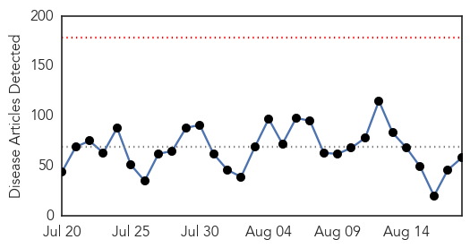
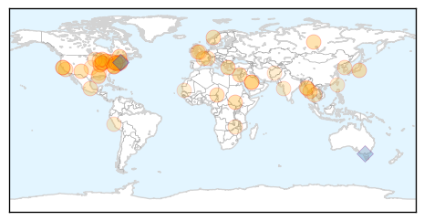
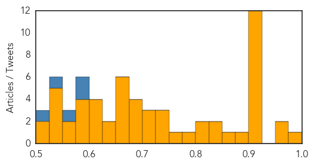
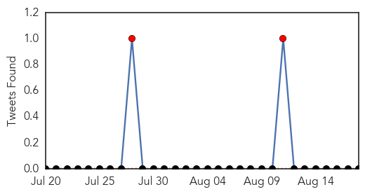

Unknown
30-Day Web Trend
0 alerts, 0 warnings

30-Day Twitter Trend
5 alerts, 0 warnings

Article Locations
Article Confidences
Top Articles:
- 0.989
- The Doctor Is In: Legionnaires' outbreak must be contained
- 0.959
- Canadian Cyclospora Numbers Rise to 87
- 0.950
- All tests negative for MERS in Opelika hospital patient
- 0.920
- Plague in squirrels prompts closure of popular Yosemite National Park campground
- 0.917
- Chicago Tribune
- 0.917
- Chicago Tribune
- 0.917
- Chicago Tribune
- 0.917
- Chicago Tribune
- 0.917
- Chicago Tribune
- 0.917
- Chicago Tribune
- 0.917
- Chicago Tribune
- 0.917
- Chicago Tribune
- 0.917
- Chicago Tribune
- 0.914
- Tuberculosis Outbreaks – Is Enough Being Done?
- 0.902
- Proof that Morgellons Disease is a Physical Illness – It isn’t “All in your head”
- 0.893
- Two wait on test results after Monywa H5N1 outbreak
- 0.858
- Weekly Overview: Latvia Reports 53 New Outbreaks of African Swine Fever
- 0.848
- CORRECTED-Pakistan, Afghanistan must step up fight against polio - WHO
- 0.834
- Healing the Sickest Patients: How 'Hot Spotters,' 'Frequent Fliers,' and 'Super-Utilizers' Impact Health Care in America
- 0.821
- Adding fluoride to tap water could halve children's tooth extractions, says study
- 0.816
- Yosemite Works to Rid Campsites of Plague After Camper Infected
- 0.792
- More nurses diagnosed with tuberculosis at Portimão Hospital
- 0.763
- Canadian Cyclospora Cases Now at 87
- 0.738
- Floods cause clean water shortages across Burma
- 0.731
- Rabies-infected bat found in Naperville
- 0.729
- Debate brews over Health Ministry overhaul
- 0.721
- How DNA detectives are helping solve the rise of superbugs
- 0.716
- Floods Cause Acute Water Shortages in Hundreds of Villages
- 0.705
- Third case of meningococcal ruled out in Hunter New England region
- 0.680
- Shawano County has confirmed case of tuberculosis
- 0.677
- Worker who eluded Charlie Hebdo killers sues French TV
- 0.677
- French pork farmers ask govt to save their bacon
- 0.677
- ‘Defeating IS takes priority over Assad’ in new Syria plan
- 0.674
- Thai police hunt bombing suspect caught on CCTV
- 0.667
- Free Legionella Pocket Guide & Webinar Offered by EMSL Analytical, Inc.
- 0.660
- Water Line Break Causes Boil-Water Advisory in Harmontown
- 0.656
- Use of contact precautions should be customized based on local needs and resources
- 0.655
- Massachusetts health officials say MRSA cases at Westfield youth center no public health threat
- 0.653
- Deadly 'brain-eating' amoeba found in Louisiana water system
- 0.648
- Unmet teen healthcare needs cause problems as adults
- 0.644
- Unmet teen healthcare needs cause problems as adults
- 0.613
- Ways to avoid eye infection during monsoons
- 0.609
- Time for a counterattack on superbugs that kill thousands
- 0.604
- Blocked adoptions in DR Congo: ‘It’s like our children are in prison’
- 0.600
- Northwest Ohio hospitals among best, worst for infection control
- 0.592
- Lyme disease still stuck in controversy, but research making strides
- 0.583
- Taitung authorities express concerns over spread of rabies
- 0.580
- Germs and infections to prepare for as kids head back to school
- 0.576
- NHS could save millions in tooth extractions by putting fluoride in the water
- 0.572
- Blue-Green Algae Bloom Found in Warwick Pond
Showing top 50 articles...
Top Tweets:
- 0.778
- “The flu vaccine needs to change every year because the virus is constantly mutating.”http://t.co/PNJkAJRWJO
- 0.594
- Saudi Arabia has a large MERS outbreak underway in Riyadh. 10 cases announced today, 9 y'day. Total reported so far: 63 since late July 1/2
- 0.591
- RT: Expecting mamas need their flu shots! protectingfortwo: Absolutely! Very important with flu season approachi…
- 0.570
- So far only a few of the reported Riyadh MERS cases have been healthcare workers. But this is a hospital outbreak; that will likely change.
- 0.569
- .@WHO updates on 12 recent KSA MERS cases; most are part of the Riyadh outbreak. Case after case infected in hosp. http://t.co/nAIzOgReIq
- 0.529
- .@PrayerPeace Hasn't been confirmed ongoing community spread so far with MERS. Some household clusters. Mostly hosp outbreaks
Meningitis
30-Day Web Trend
2 alerts, 0 warnings

30-Day Twitter Trend
2 alerts, 0 warnings

Article Locations

Article Confidences
Top Articles:
- 0.989
- Meningitis C vaccine shortage prompts fears of major outbreak in Africa
- 0.982
- Meningitis C vaccine shortage in Africa
- 0.971
- New meningitis case reported in Highlands
- 0.962
- What to know about meningitis for World Meningitis Day
- 0.935
- Beware of respiratory diseases
- 0.908
- All you need to know about Haj vaccinations
- 0.893
- Sweden confirms meningitis after Japan scout jamboree
- 0.883
- Sweden confirms meningitis after Japan scout jamboree
- 0.866
- Fourth meningitis case as parent of Scout diagnosed with disease
- 0.851
- Three Scottish scouts treated for meningitis after Japan trip
- 0.817
- Vaccination now required for students living on campus
- 0.807
- Sweden confirms meningitis case in girl after Japan scout jamboree
- 0.754
- Swedish officials confirm scout has meningitis
- 0.733
- Swedish scouts treated after meningitis scare
- 0.724
- How a Tick Bite Led to Multiple Limb Amputations for One Oklahoma Woman
- 0.693
- UK meningitis warning after Scottish Scouts catch disease on Japan trip
- 0.687
- Teenage scout diagnosed with meningitis in Stockholm - Radio Sweden
- 0.682
- Sweden suspects meningitis outbreak at scout camp in Japan
- 0.663
- Bottled water buys, chlorine burns follow amoeba discovery
- 0.657
- New vaccine requirements take effect as school begins
- 0.650
- Walk-in clinic allows students to get meningitis vaccine
- 0.643
- Sweden suspects meningitis outbreak at scout camp in Japan - MyNorthwest
- 0.635
- Human health vulnerability to climate change in Ghana
- 0.576
- Cases of meningitis linked to Scout trip rises
- 0.570
- Brain-eating amoeba found in Terrebonne Parish water system, officials say
- 0.558
- Sweden suspects meningitis outbreak at major scout jamboree in Japan
- 0.532
- Amoeba discovered in part of Terrebonne Parish water system
Top Tweets:
-
No tweets found for Aug 18, 2015